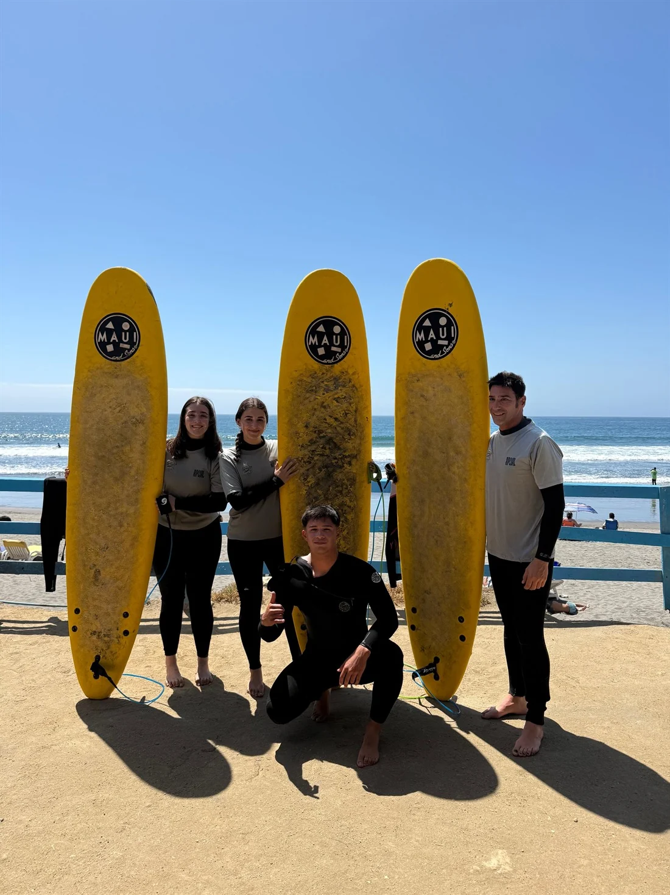
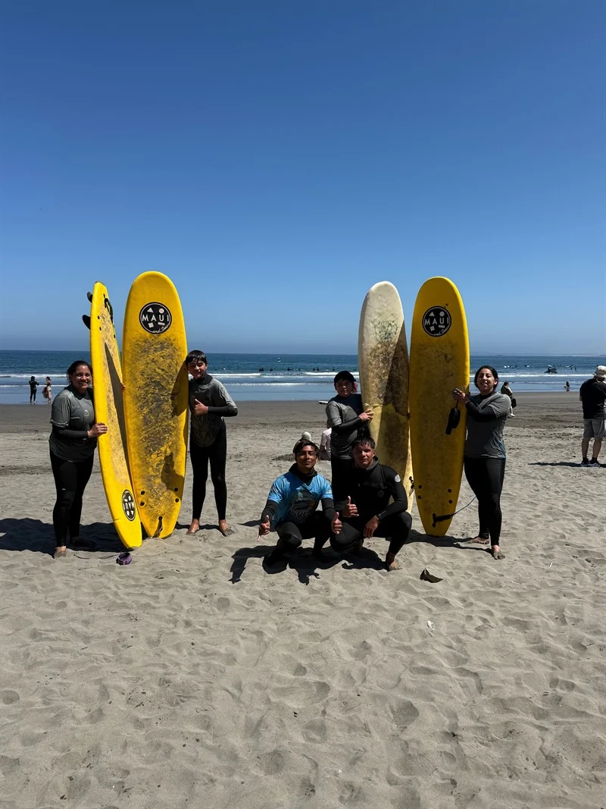
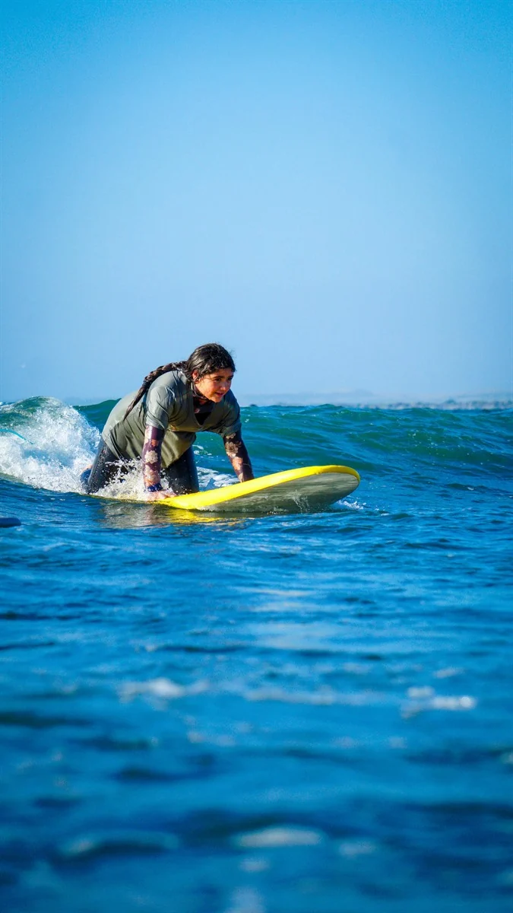

✳ Un pie en la arena. El otro, donde sea.
LA VIDA,
MÁS SALADA.
Ropa para después del agua.
Surf para todo lo demás.
Con muchas ganas de salir.↓
No pudimos reproducir el video. Usa el botón para reintentar.
UN RATO AFUERA SIEMPRE HACE BIEN.01 / Del mar a la calle
COMPRA POR MARCA.
Cuatro marcas. Cada una con lo suyo.
Elige por dónde partir.
Toda la selección

Cargando el catálogo de kankisurf.cl…

Buen grupo. Buen plan.02 / Así somos
EL PLAN ERA
UN RATO.
NOS QUEDAMOS.
Somos Kanki. Nos gusta el mar, la ropa y esos días que empiezan con una tabla y terminan sin mirar mucho la hora.
La Boca, Concón, es nuestro punto de encuentro. Lo demás pasa entre el agua y la calle.
Nos vemos en la playa ↗03 / Escuela Kanki Surf · La Boca, Concón
MENOS “ALGÚN DÍA”.
MÁS AL AGUA.
Si tienes ganas de probar, por ahí se empieza.
Conoce la escuela y encuentra tu próximo plan de playa.

DE ESTE LADO DE LA PANTALLA ↗04 / Fuera del agua
SIN MUCHO
FILTRO.
Días de playa. Planes que se alargan.
Un poco de la vida de este lado.
Mi agenda de hoy depende de la marea.
Kanki, probablemente.Cada marca, su historia.
Essentials, Grizzly, Stüssy y Luked.
02 / TU PRÓXIMA PRENDAEncuentra tu talla.
Despacho con Starken · envío por pagar.
03 / LA ESCUELANos vemos en el agua.
La Boca, Concón. Donde empieza el plan.